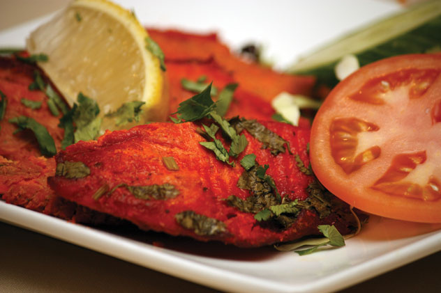

Ingredients:
1)2 lbs of any white fish fillets (cut into 2-3-inch
pieces)
2)1 tbsp chopped fresh ginger
3)4 cloves garlic
4)1/3 cup vinegar
5)Salt To Taste
6)1 tbsp ground coriander seeds
7)1 tbsp ground cumin seeds
8)1 tsp ground cayenne pepper
9)1/2 cup vegetable oil
How to make barbecued fish :
1)Blend together ginger, garlic, vinegar, salt, coriander, cumin, cayenne and oil in the blender to form a fine paste.
2)Marinate the fish pieces into the paste for about 4 hours in the refrigerator.
3)Pre-heat the oven on maximum heat at broil.
4)Cover the oven tray with foil to avoid mess.
5)Place the marinated fish pieces on the tray and broil for about 8-10 minutes.
6)Turn over and broil for about 8 minutes again.
7)Keep a constant check. Broiling time may vary depending on the thickness of fish pieces.
8)Serve the tandoori fish hot with your favorite chutney.